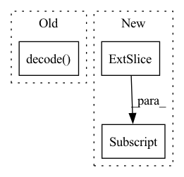

Pattern ID :34226
Before Change
pred = "".join(dataloader.tokenizer.decode(decoder.generate(torch.LongTensor([args.bos_token]).to(
device), args.max_seq_len, eos_token=args.eos_token, context=encoded[:1].detach())[:-1]).split(" ")).replace("Ġ", " ").strip()
s = seq["input_ids"][0]
truth = "".join(dataloader.tokenizer.decode( s[1:list(s).index(args.eos_token)]) .split(" ")).replace("Ġ", " ").strip()
if args.wandb:
table = wandb.Table(columns=["Truth", "Prediction"])
table.add_data(truth, pred)After Change
wandb.log({"train/loss": loss.item()})
if (i+1) % args.sample_freq == 0:
num_samples = 4
dec = decoder.generate(torch.LongTensor([args.bos_token]*len(encoded[:num_samples]))[:, None] .to(device), args.max_seq_len,
eos_token=args.pad_token, context=encoded.detach()[:num_samples])
pred = token2str(dec[:num_samples], dataloader.tokenizer)
truth = token2str(seq["input_ids"], dataloader.tokenizer)In pattern: SUPERPATTERN
Frequency: 3
Non-data size: 3
Instances Fragment ID: 98106361
Project Name: lukas-blecher/latex-ocr
Commit Name: ba220245e394aea309e5e158ba8d6958522a1f07
Time: 2021-02-02
Author: luk.blecher@gmx.de
File Name: train.py
M Class Name: AnonimousClass
N Class Name: AnonimousClass
M Method Name: train(1)
N Method Name: train(1)
M Parent Class:
N Parent Class:
M File Name: train.py
N File Name: train.py
M Start Line: 21
M End Line: 54
N Start Line: 21
N End Line: 56
Before Change
length_penalty=1.0,
early_stopping=True
)
preds = [self.tokenizer.decode( g, skip_special_tokens=True,
clean_up_tokenization_spaces=True) for g in generated_ids]
target = [self.tokenizer.decode(t, skip_special_tokens=True,
clean_up_tokenization_spaces=True) for t in y]
if i % 50 == 0:After Change
// Labels for computing the sequence classification/regression loss.
// Indices should be in [-100, 0, ..., config.vocab_size - 1].
// All labels set to -100 are ignored (masked), the loss is only computed for labels in [0, ..., config.vocab_size]
lm_labels = y[:, 1:] .clone().detach()
lm_labels[y[:, 1:] == self.tokenizer.pad_token_id] = -100
target_mask = batch["target_ids_y"].to(self.device, dtype=torch.long) Fragment ID: 98106362
Project Name: kimdanny/user-simulation-t5
Commit Name: 62ee6ec06a3adbf87c420fc449c8e74696741d7a
Time: 2022-02-13
Author: dannykim153@gmail.com
File Name: t5_mtl/train.py
M Class Name: T5Trainer
N Class Name: T5Trainer
M Method Name: validate(2)
N Method Name: validate(2)
M Parent Class:
N Parent Class:
M File Name: t5_mtl/train.py
N File Name: t5_mtl/train.py
M Start Line: 151
M End Line: 178
N Start Line: 203
N End Line: 229
Before Change
)
if stop:
// Decode all tokens
output_text = self.tokenizer.decode(
all_input_ids.squeeze(-1), skip_special_tokens=True,
cleanup_tokenization_spaces=False
)
// Slice with input_length to remove padding
token_ids = all_input_ids[-new_input_length:]
tokens = self.tokenizer.batch_decode(token_ids)
// Add NaN for the first prompt tokenAfter Change
if stop:
// Decode generated tokens
generated_text = self.decode(
all_input_ids[-stopping_criteria.current_tokens :, 0]
)
output_text = request.inputs + generated_text
// Slice with input_length to remove padding
token_ids = all_input_ids[-new_input_length:] Fragment ID: 98106365
Project Name: huggingface/text-generation-inference
Commit Name: 15511edc01a0725d374840f0e77d085eb5821483
Time: 2023-01-20
Author: olivier@huggingface.co
File Name: server/text_generation/models/causal_lm.py
M Class Name: CausalLM
N Class Name: CausalLM
M Method Name: generate_token(2)
N Method Name: generate_token(2)
M Parent Class: Model
N Parent Class: Model
M File Name: server/text_generation/models/causal_lm.py
N File Name: server/text_generation/models/causal_lm.py
M Start Line: 322
M End Line: 345
N Start Line: 331
N End Line: 354